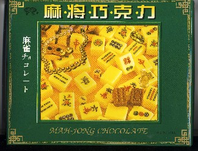

純麻雀会のメンバー、Nさんが仕事で上海に行った。
先日の純麻雀会で、「おみやげです」と言ってくれたのが麻雀チョコレート。「おお、これはありがたい」とおいしくいただいた。
ところで日本でもむかしは外来語は漢字に直して表記していた。スポーツでいえば、ベースボールは野球で、バスケットボールは籠球。テニスは庭球で、ピンポンは卓球。まだ排球(バレーボール)に蹴球(サッカー)にと、まだいくらでもある。
しかし最近はそのままカタカナで表記されるのが普通となっている。たしかにその方が手間がかからないし、表記も楽でいい。しかし中国には漢字しかないので、いまでもすべて漢字に直して表記する。さっきのスポーツでいえば、バドミントンは羽毛球だ。
羽毛球は意訳であるが、発音をなぞっただけで漢字に意味がないのものもたくさんある。しかしせっかくなので工夫をこらしたものもある。この中で有名なのが可口可楽（コカコーラ）、“口の中が楽しい”とは超傑作。
で、そのおみやげの麻雀チョコレート、麻将巧克力となっていた。

これには、（おお、なるほろ）と思わず感心した。これが中国語での正式？の漢字表記かどうかは知らないが、発音はマージャンチョコリーか。意味は麻雀に上手に勝つ力。 うん、それで先日の純麻雀会では勝ちまくったのか。(笑)
|